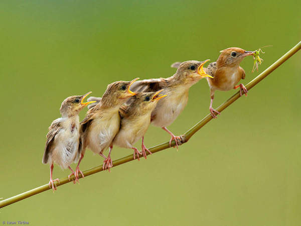
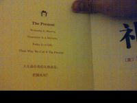
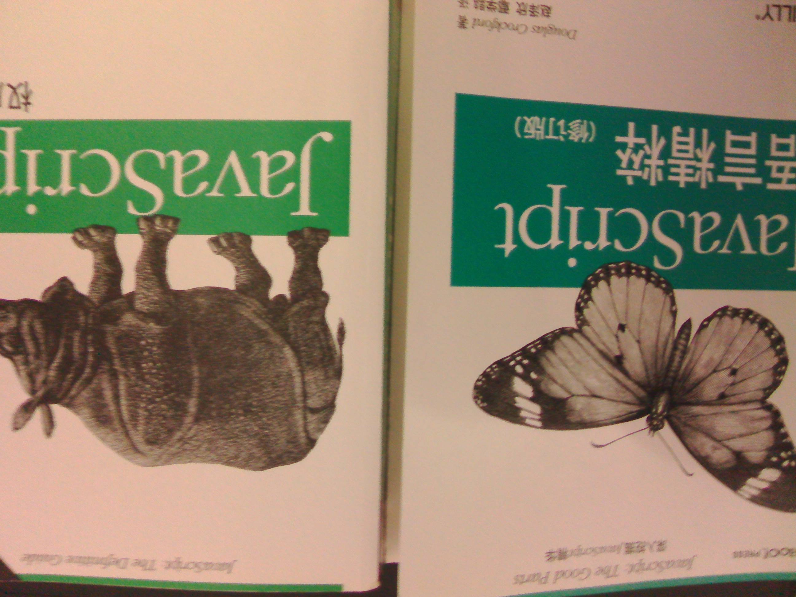
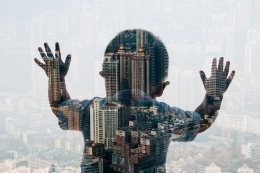
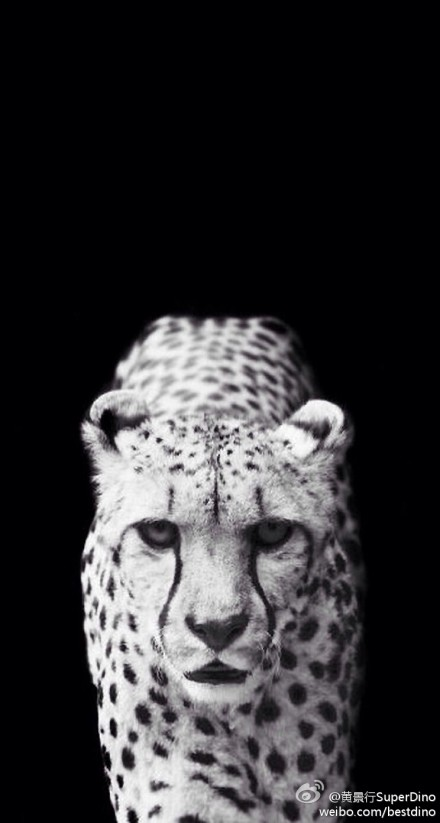
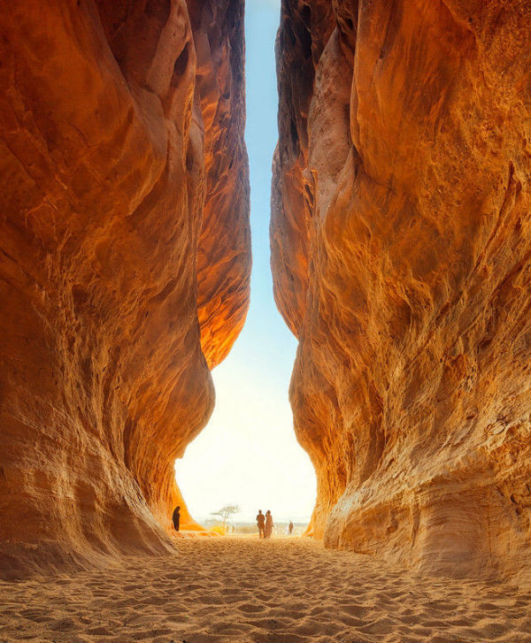
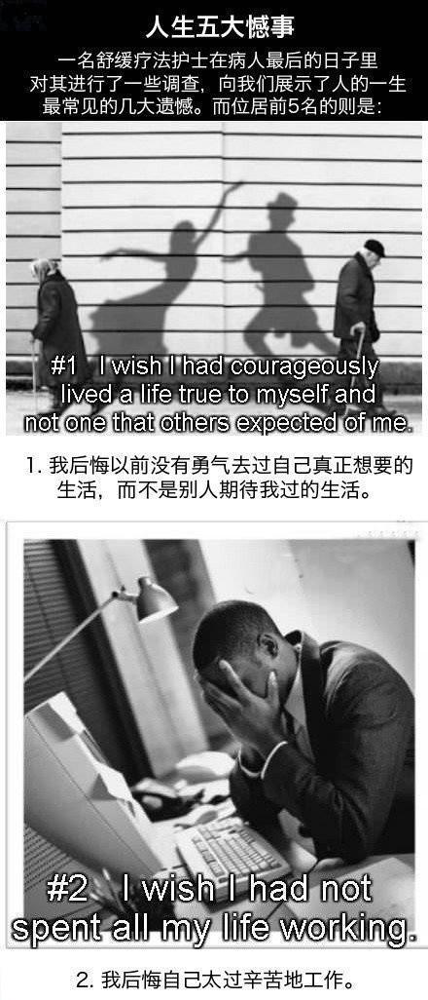
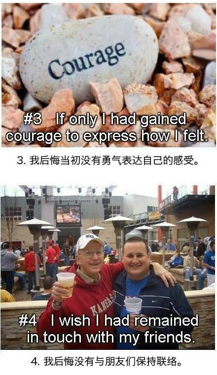
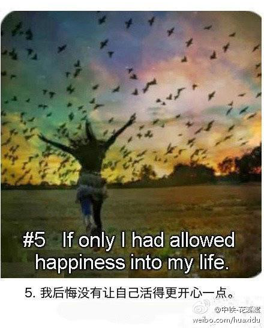

0. 我遗憾的事情
没能去参加2013年雅尼的北京音乐会，（=_=）!
因为2012年目标完全没有达成，所以说2013年对自己的处罚是要天天凌晨3点睡觉，很显然，我没做到(年年的目标最后都要吹掉一半)
陪伴我两年的AKG420(爱科技耳机)居然挂彩了,陪伴我一年的CX200(入耳森海塞尔)因为手抖,也跪了,然后入了CKM500(入耳铁三角,高音神器,值得欣慰)

1. 我追求和我热爱的
没有跟以前一样疯狂的打球了，就在今年下半年我彻底爱上了一个叫Poppin(毕竟冬天太冷，而且附近的大学球场很远,今年过年回家恶补一下)，
在今年终于是一名合格的前端开发了，为了成为大神不懈而努力中。
2. 我印象比较深刻的书
《影响力》《执行力》
《JAVASCRIPT高级程序设计》《JAVASCRIPT权威指南》《JAVASCRIPT精粹》《JAVASCRIPT设计模式》
《礼物》《九型人格》《FBI读人术》



3. 我自豪的
因为以前平常很喜欢闲逛，去玩，现在没有以前那么疯狂了，平常看看书，写写代码，练习pop，打打球时间过得很快的.
很感谢很重要的朋友们在有时候给你一些指点，这一直是我一笔很重要的财富。
也许成功很简单，做你喜欢的事情，坚持下去就可以了，1年，2年，3年，。。5年。。
我会继续努力
4. 我想对自己说的
不要说脏话，这个很重要
不要因为走的太远，忘了我们为什么出发，柴静。
intheworld无论怎样，总有一些人说你做到不到，不应该这样和那样（往往他们也没有恶意），但是如果你听了他们的话，你就不是你自己，你会变成和他们一样，做自己很难，要坚持就好
人生就是一场无法抗拒的前进
多去承担责任，责任越大，就越优秀了，不要害怕，失败是正常的
在现实生活中，你和谁在一起的确很重要，甚至能改变你的成长轨迹，决定你的人生成败。和什么样的人在一起，就会有什么样的人生。和勤奋的人在一起，你不会懒惰；和积极的人在一 起，你不会消沉；与智者同行，你会不同凡响；与高人为伍，你能登上巅峰
(话说年前的运气不错，公司抽奖居然抽到一台三星的板，前些天跟常诚老师混了xpower的年度表演，居然又中奖了，二楼:无图无真相，LZ回复二楼：木有),这是要逆袭的节奏

6. 明年的计划
把天通苑的钱补齐了，中间用一个月时间背单词，找个培训的学习英语了，毕竟都听了一年多的英语听力了.(感觉效果很不行)
青春很短暂，一路只有自己可以相信，不要停止，不要轻易相信别人的抱怨，不要相信别人的好话和坏话
希望象他们一样，可以很负责，他们一样可以拥有丰富经验，而且样样精通（现在我精一样就好了，不要想太多了），如他们一样，可以很用心，(他们就是别人家的孩子,你懂的)
少抽些吧，最近肚子痛到不行了.
还是有值得欣慰的东东
青春就是可以通宵看小说，通宵看动漫,通宵打球，通宵玩游戏,通宵睡觉,通宵写代码,通宵练习pop,通宵做你想做的事情
每一个第一次都值得留恋

微博上流行很久的的人生五大遗憾
  
不要太忙于低头赶路，以致错过了太多美好的风景
2013年我认为学到最宝贵的
责任：你能承担多大的责任，你就会有多大的成就。
自我：无论谁，都无法改变你的心情，你只要固执的坚持你认为正确的事情和心态就好。
学习：没有为什么
分享
再长的路，一步步也能走完；再短的路，不迈开双脚也无法到达。
{kind=link}